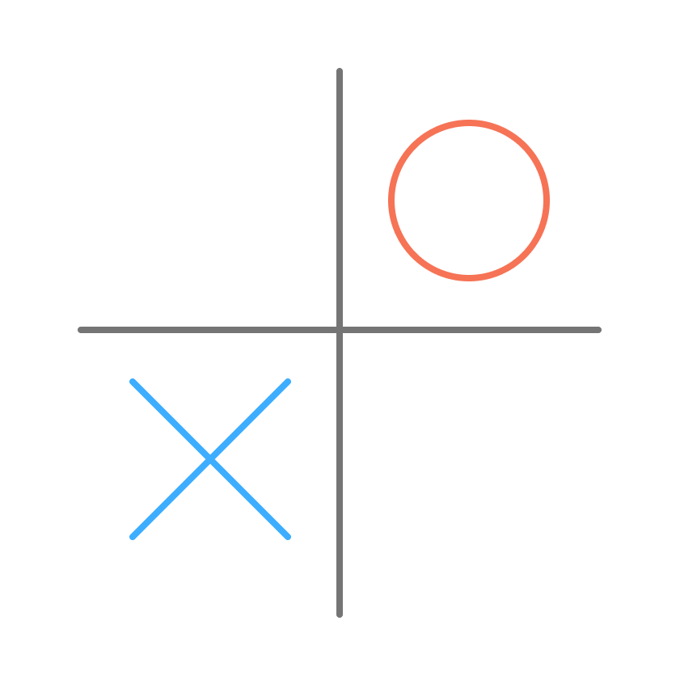
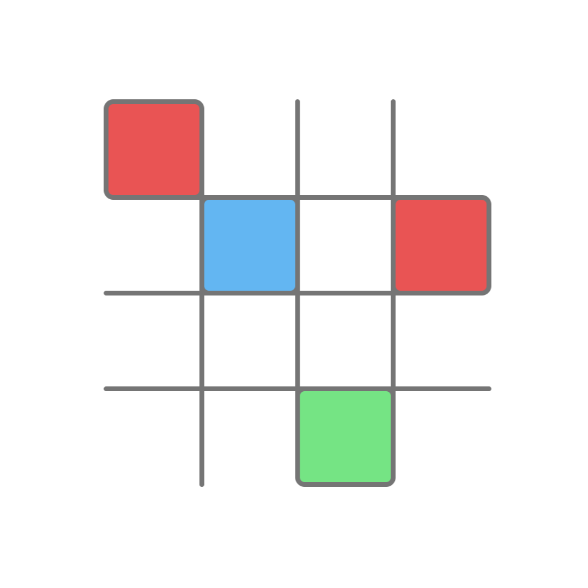
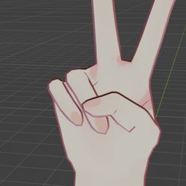

制作品



プロフィール
高知工科大学 サイバーセキュリティ学科 学士3年の芳野愛和です。 研究室には早期配属し、現在は画像処理に関する技術について学んでおります。 ゲームやプログラミング、イラストを描くことが好きで、イラストは中学生の頃から続けています。 実際にお仕事としてご依頼いただき、制作した経験もあります。 好きな音楽のジャンルは、J.POP、K.POP、クラシック、ジャズです。 気分に合わせてさまざまな曲を聴いてます。